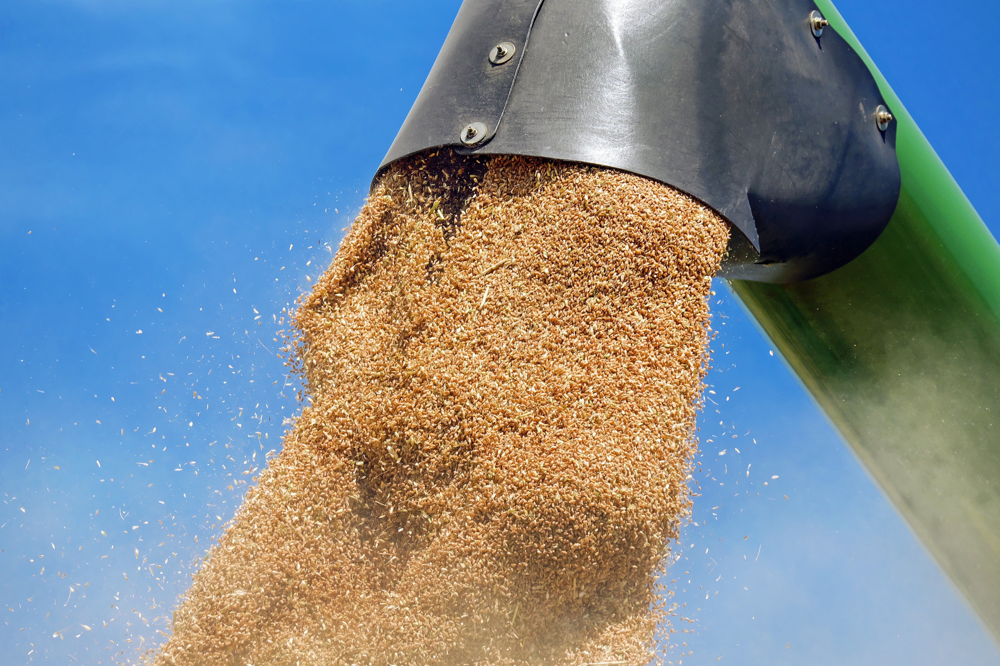

Food Security
Importance of Food Security for the Community
Food security of a community is defined as the physical and economical ability of that community to access sufficient safe and nutritious food required for the metabolism of the human body for a healthy life. (World bank + Global food security programme)
Food security could be threatened by:
- Lack of the essential food
- Physical distances of the food source and the consumer
- Economical situation that prevents people from affording available food
- Mis-distribution of the available food
Any threat on the previous aspects is also considered as a form of food insecurity (World bank)
April 2024: millions of people live in countries labelled as (Hunger Hotspots) where lives are threatened due to the lack of essential food needed for a healthy life. (Action Against Hunger)
Plants and Food Security
How Plants are Essential for Food Security
Plants are the main provider of human food by 80%, and the key source of livestock fodder, making them the most important player in food security (https://onehealthoutlook.biomedcentral.com/articles/10.1186/s42522-021-00038-7#:~:text=8,9].-,Plants provide over 80% of the food consumed by humans,societies [7, 10].).
To be specific, wheat, rice, and maize provide food for over half of the world population. (https://news.mit.edu/2022/how-molecular-biology-could-reduce-global-food-insecurity-0329)
This importance has made plants to be the main concern for us here at the Aestivum Lab, focusing on crop health and protection.
Crop Protection and Food Security
Plants pests and diseases affect the amount and quality of the available food for human consumption and use. Pest infestations have been threatening the health of essential crops needed for human and livestock consumption. The loss of these essential crops may reach to 30% of the crop, thus, threatening the food security stability. (https://onehealthoutlook.biomedcentral.com/articles/10.1186/s42522-021-00038-7#:~:text=8,9].-,Plants provide over 80% of the food consumed by humans,societies [7, 10].).
Severe diseases caused by microorganisms can cause crop loss by 30-90% of cereal crops, vegetables, fruits, and others. (https://www.ncbi.nlm.nih.gov/pmc/articles/PMC10575696/)
The FAO have reported that 20-40% of the global crop production is being lost due to crop pest infestation annually. As a result, crop protection is indispensable for increasing their productivity, reducing plant mortality, and ensuring the best quality of plant products. (https://croplife.org/our-ambitions/increasing-food-security/#:~:text=Benefits of Crop Protection&text=FAO estimates that annually between,impact on global food security.)
Increased crop protection results in reduced crop loss, hence, increased Food Security.
Molecular Biology and Food Security
Molecular biology is a key tool for the development of pest management and understanding plant-pest interaction by:
- Understanding pathogen-cell interaction
- Developing disease-resistant crops
- Resistance gene identification and cloning
- Exploring possibilities for in the native species for improving arable crops' resistance
- Speeding up the processes of plant breeding
- Natural AI identification and development
- Marker-Assisted Breeding
- Advancing techniques in diseases early detection and diagnosis